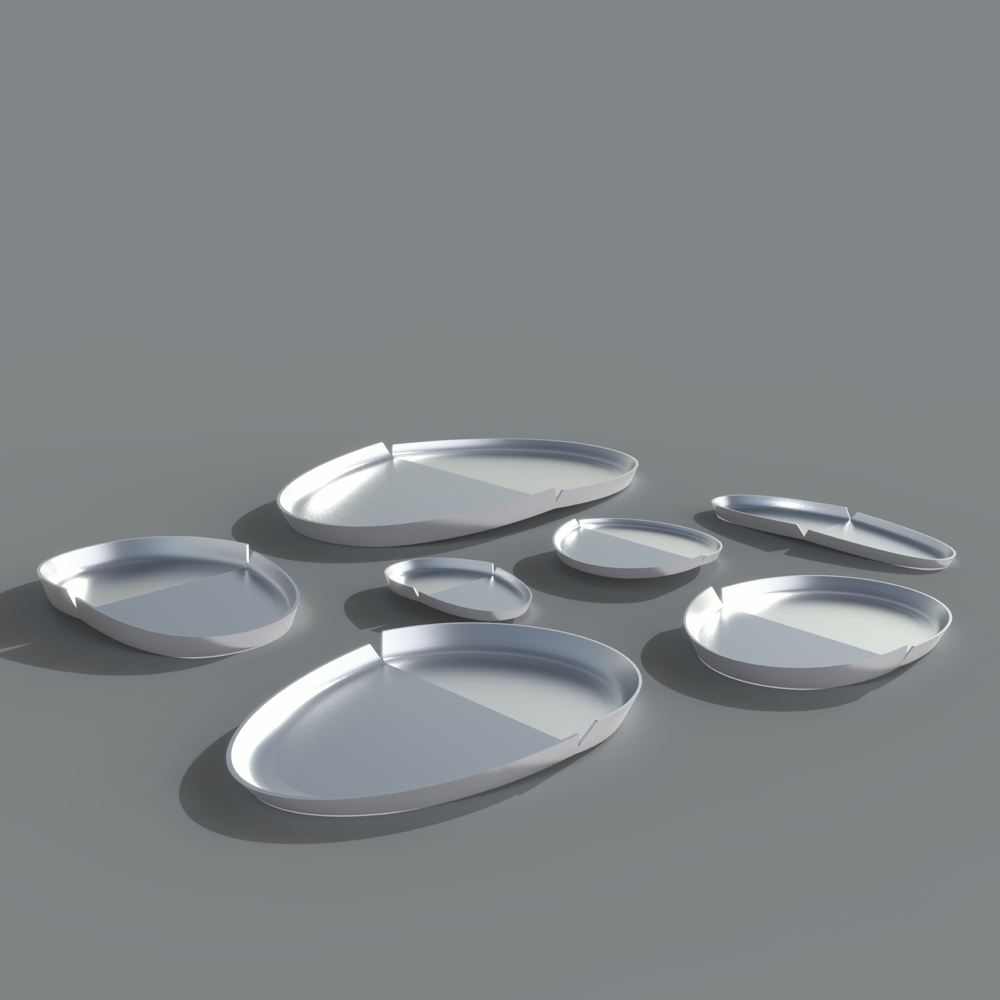
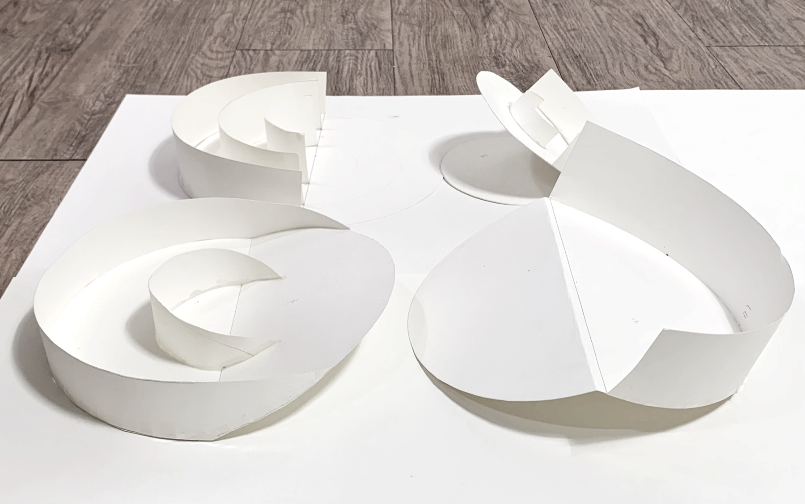
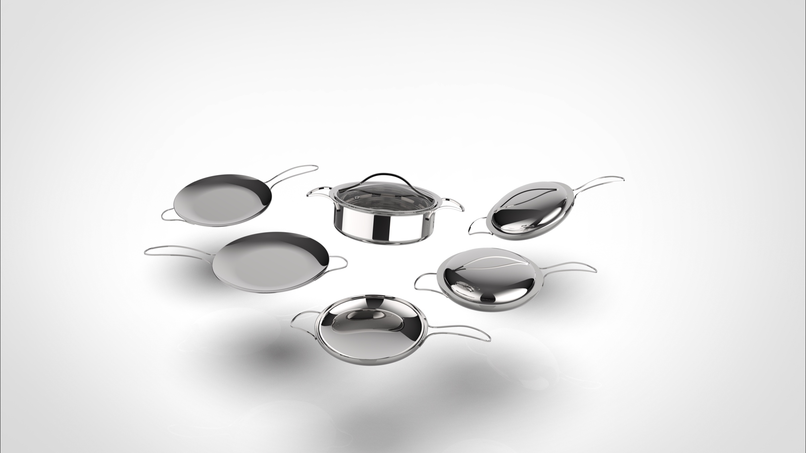
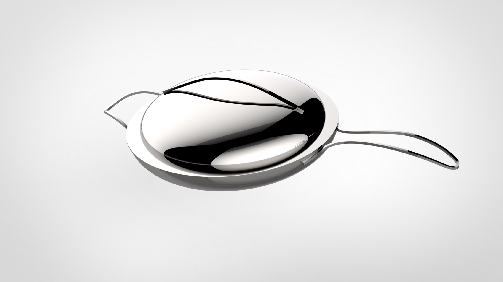
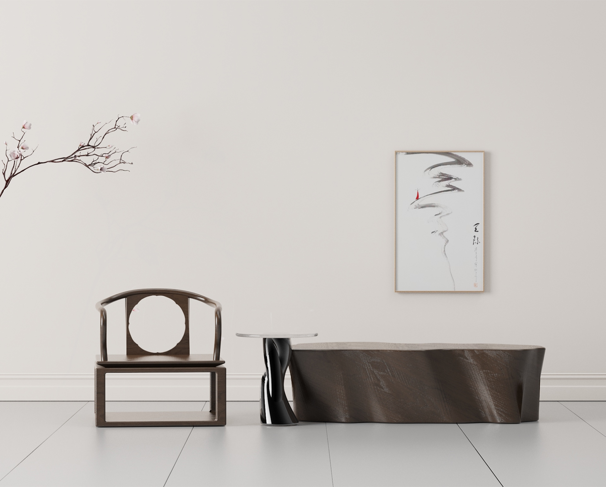
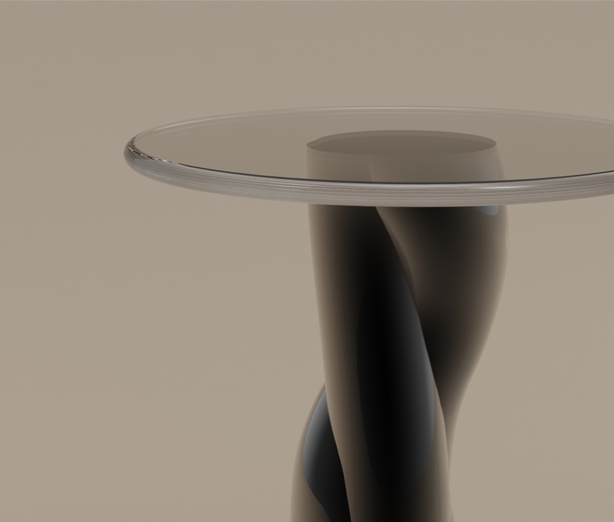
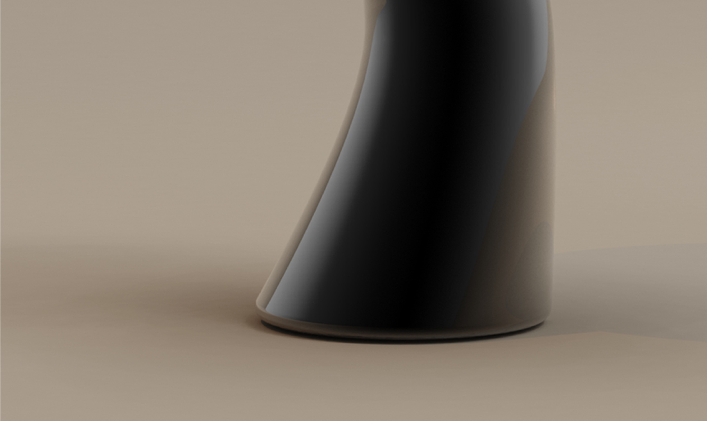
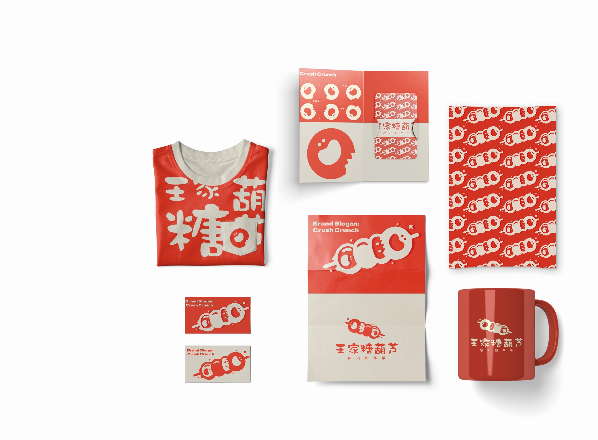
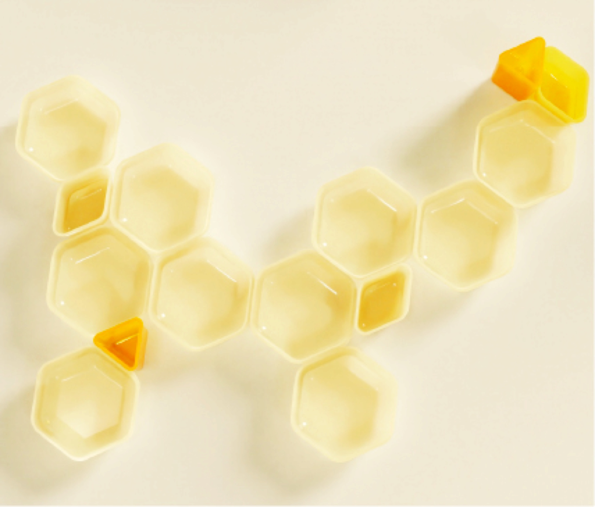

Product, furniture
and visual identity.
A selection of compact academic projects showing form development, material exploration and the translation of cultural references into contemporary visual systems.
CREVICE
A tableware family developed from the act of folding a circle. The lifted edge creates a natural grip while separating small dishes without adding extra components.
- Focus
- Form logic · paper mock-up · rendering
- Context
- Academic product design


FLYING SERIES
Cookware forms shaped around a continuous transition between body and handle. Wing geometry informed the handle profile and its transition into the pan body.
- Focus
- Bionic form · CAD · physical prototype
- Context
- Academic product design


ZEN
Lotus-mirror and Bodhi-tree motifs were abstracted through curves, voids and reflective surfaces rather than reproduced as ornament.
- Focus
- Symbol research · narrative · furniture form
- Context
- SNU BK21 design project



WANGGA TANGHULU
An academic brand-refresh exercise balancing familiarity with a more energetic tone. A small anthropomorphic tanghulu character and hand-drawn Chinese lettering connect playfulness with memory.
- Focus
- Brand character · packaging · visual system
- Context
- Graduate course project

HONEYCOMB
A modular tableware study in which hexagonal units connect, separate and scale with the meal. The units can be rearranged for different serving layouts.
- Focus
- Modularity · prototype · visual rhythm
- Context
- Academic product design
